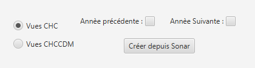
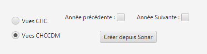

Création Vues CHC/CDM
Cette fonction permet de créer les vues pour les éditions de maintenance CHC et CDM (cycle de maintenance) :
Pour les éditions CHC :

Pour les éditions CHCCDM (cycle de maintenance) :
